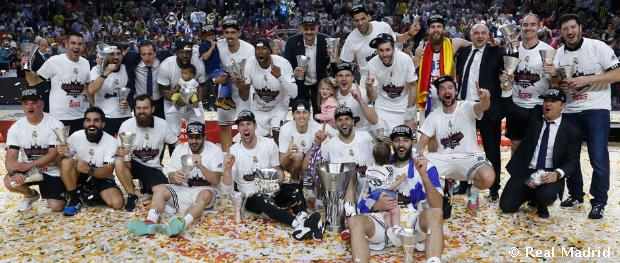

Basketball History
Invented by Canadian-born James Naismith in 1891, basketball took three decades to make its way to Spain. In the late 1920s, and as a result of the sport’s growing popularity, Ángel Cabrera proposed to Real Madrid that the club start its own team. From there a team was created that proved decisive in making basketball such a popular sport in Spain. A sport that would become legendary.
At the beginning, basketball’s evolution in Spain was helped on by the efforts of individuals. Cabrera, the founder of the basketball project, not only played but was also a driving force behind the Federación de Castilla. One of his first teammates, Segundo Braña, became the team’s first coach in 1935. The dedication of these pioneers helped basketball really get a foothold in Real Madrid and gradually helped it become a hugely popular sport all over Spain.
In 1983 the Asociación de Clubes de Baloncesto was created, and it took over the responsibility of organising the league from the Federation. The number of participating sides grew considerably, and the type of competition changed. For the first time, the title was decided in a playoff format.
In the summer of 1992, Real Madrid acquired the services of Arvydas Sabonis. Nicknamed ‘the tsar’, he was a key piece of the new project headed up by Mariano Jaquotot, who oversaw the running of the team as he looked to take them to the top of the continental game. A pivot with outstanding vision for which there was no stopping him.
In the 2000-01 season a new competition was born: the Euroleague. With it, the clubs adapted the historic European Cup (later called the European League) to the modern era. The first ever game was Real Madrid-Olympiakos, played at the old Ciudad Deportiva, which was renamed Raimundo Saporta in 1999. It wasn’t luck of the draw, but recognition that Real Madrid were the kings of Europe.
In the 2016/17 season, the team won the club's fourth straight Copa del Rey and the 27th in its history, downing Valencia Basket in the showpiece. The following campaign saw Real Madrid once again crowned European champions, this time in Belgrade. The Whites secured the club's 10th European success after seeing off Fenerbahçe in the final. A few weeks later, Laso's men clinched the double after capturing the club's 34th league title. The 2018/19 started with a win in the Super Cup in Santiago and ended with league title number 35. The Super Cup was won again in the 2019 edition. The Supercopa was won again in the 2019 edition and the 28th Copa del Rey title was won in 2020 in Malaga. The 2020/21 campaign got off to a good start with the third consecutive Super Cup.
